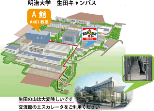

宮下研究室5周年記念！
2007年に立ち上がった宮下研究室は，
皆様に支えられ，このたび“5周年”を迎えることができました．
この節目の時期に研究室の活動を振り返り，
今だからこそ公開できる研究室運営の工夫から将来に向けてのビジョンまで，話せる場を企画しました．
また，宮下研究室では「ヒューマン・コンテンツ インタラクション」のコンセプトのもとに，人間がコンテンツを生み出し，また享受するための新しいメディアを多く開発してまいりました．
今回はオープンラボも企画し，「SeekRopes」「不可能立体CG」「サンプリング書道」「スイッチバックカーソル」「ＭＡＥＤＥ」といった過去の研究成果の体験に加え，最新の研究成果にも触れていただくことができます．
アクセス
神奈川県川崎市多摩区東三田1-1-1地図を見る

【共催】"SENSACT"

宮下研究室5周年記念イベントは，テクノロジトークイベント"SENASACTと共催です．会場にお越しの際に，ぜひこちらも合わせてお楽しみください！
プログラム
13:00 – 14:00 インタラクティブセッション
(インタラクティブ隊長：B4 大島裕樹)
__________________________________________
14:00 – プレゼンセッション
(座長：M1 嶋本諒太)
(チャット座長：B4 大家眸美)
M2 中橋雅弘 宮下研徹底分析
M2 松岡拓人 これからの宮下研
B4 井川洋平 宮下研とABPro
宮下芳明 宮下研 エピソード0
～特別降臨～
西本一志（北陸先端科学技術大学院大学）
～お祝いメッセージ～
中村聡史（京都大学）
園山隆輔（T-D-F代表）
栗原一貴（産業技術総合研究所）
宮下芳明 5周年だからこそ話せる
宮下研のこと
___________________________________________
インタラクティブセッション再び
＆
ラボツアー